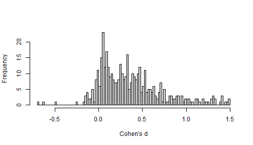
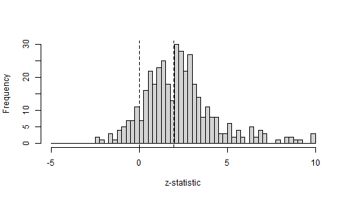
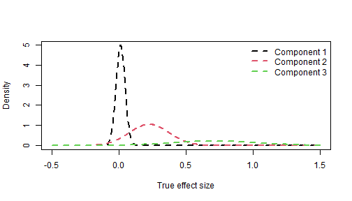
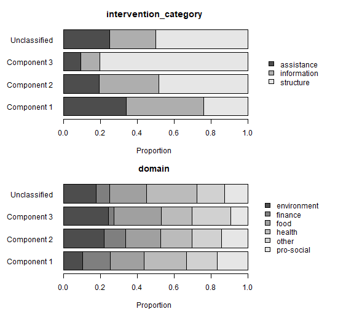

Application to Nudging (Mertens et al., 2022)
Maximilian Maier
Source:vignettes/nudging.Rmd
nudging.RmdThis vignette applies metamixr to a meta-analysis of
choice-architecture (“nudge”) interventions collected by Mertens et
al. (2022), which are included in the package as
mertens_nudge.
Data
The data set contains 447 effect sizes (Cohen’s d) with their sampling variances. Before fitting we remove effect sizes of 1.5 or larger in absolute value, and the studies by Wansink, who had a large number of papers retracted due to evidence of research misconduct. This leaves 414 effect sizes.
data("mertens_nudge")
nudge <- subset(mertens_nudge, abs(cohens_d) < 1.5)
nudge <- nudge[!grepl("^Wansink", nudge$reference), ]
nrow(nudge)
#> [1] 414
y <- nudge$cohens_d
sd <- sqrt(nudge$variance_d)
hist(y, breaks = 100, main = "", xlab = "Cohen's d")
The distribution of the z-statistics suggests publication bias as test statistics pile up just above the significance threshold.
z <- y / sd
hist(z[z > -5 & z < 10], breaks = seq(-5, 10, by = 0.25), main = "", xlab = "z-statistic")
abline(v = c(0, qnorm(0.975)), lty = 2)
Model specification
The selection model uses steps = c(0.5, 0.975). This
implies that significant p-values on two-sided tests are more likely to
be published than non-significant p-values and among the non-significant
p-values effects in the expected direction are more likely to be
published than backfire effects.
We fit this selection model with one to four mixture components, and
the corresponding models without selection (re_mix()) for
comparison.
M_max <- 4
fits_sel <- vector("list", M_max)
fits_re <- vector("list", M_max)
for (m in 1:M_max) {
fits_sel[[m]] <- sel_mix(y, sd, M = m, steps = c(0.5, 0.975),
chains = 4, cores = 4, iter = 20000, warmup = 10000,
seed = 1, refresh = 0)
fits_re[[m]] <- re_mix(y, sd, M = m,
chains = 4, cores = 4, iter = 20000, warmup = 10000,
seed = 1, refresh = 0)
}Convergence
Mixture models can have multimodal posteriors, in which case chains started from different values settle in different modes and the usual convergence diagnostics flag the fit. Before comparing models we therefore check, for every fit, the largest R-hat of the model parameters and the number of divergent transitions.
check_fit <- function(fit) {
pars <- intersect(c("mu", "tau", "theta", "omega"), fit@model_pars)
s <- rstan::summary(fit, pars = pars)$summary
s <- s[is.finite(s[, "Rhat"]), , drop = FALSE]
div <- sum(sapply(rstan::get_sampler_params(fit, inc_warmup = FALSE),
function(x) sum(x[, "divergent__"])))
c(max_rhat = round(max(s[, "Rhat"]), 3), divergences = div)
}
conv <- rbind(t(sapply(fits_sel, check_fit)), t(sapply(fits_re, check_fit)))
rownames(conv) <- c(paste0("sel_mix M=", 1:M_max), paste0("re_mix M=", 1:M_max))
conv
#> max_rhat divergences
#> sel_mix M=1 1.000 0
#> sel_mix M=2 9.766 53
#> sel_mix M=3 1.002 0
#> sel_mix M=4 1.005 51
#> re_mix M=1 1.000 0
#> re_mix M=2 1.000 0
#> re_mix M=3 1.000 0
#> re_mix M=4 1.019 25The two-component selection model has not converged: an R-hat of
almost 10 and many divergent transitions likely imply that the four
chains ended in different modes of the posterior, so its parameter
summaries and its marginal likelihood below cannot be trusted. The
multimodality vignette (vignette("multimodality")) shows
how to diagnose such multimodality by initialising chains in the
different modes and comparing the marginal likelihoods across them. All
other models converged (R-hat at most 1.02), although the four-component
models still show some divergent transitions.
Model comparison
To estimate the posterior probability of each model given the data, we can use bridgesampling to estimate each model’s marginal likelihood.
fits <- c(fits_sel, fits_re)
names(fits) <- rownames(conv)
logml <- sapply(fits, function(f) bridge_sampler(f, silent = TRUE)$logml)
post_prob <- exp(logml - max(logml)) / sum(exp(logml - max(logml)))
round(cbind(logml = logml, post_prob = post_prob), 3)
#> logml post_prob
#> sel_mix M=1 -132.626 0.000
#> sel_mix M=2 -85.358 0.000
#> sel_mix M=3 -75.471 0.539
#> sel_mix M=4 -75.628 0.461
#> re_mix M=1 -154.892 0.000
#> re_mix M=2 -115.559 0.000
#> re_mix M=3 -105.789 0.000
#> re_mix M=4 -107.965 0.000Every model without selection is decisively rejected, and among the selection models the data favour three or four components, with the evidence split almost evenly between the two.
Inspecting the selected model
best <- fits[[which.max(post_prob)]]
print(best, pars = c("mu", "tau", "theta", "theta_preselection", "omega"))
#> Inference for Stan model: selection_mix.
#> 4 chains, each with iter=20000; warmup=10000; thin=1;
#> post-warmup draws per chain=10000, total post-warmup draws=40000.
#>
#> mean se_mean sd 2.5% 25% 50% 75% 97.5% n_eff Rhat
#> mu[1] 0.01 0 0.01 -0.01 0.00 0.01 0.02 0.04 3367 1
#> mu[2] 0.23 0 0.07 0.06 0.19 0.24 0.28 0.34 1994 1
#> mu[3] 0.71 0 0.24 0.24 0.53 0.73 0.91 1.12 2472 1
#> tau[1] 0.03 0 0.01 0.00 0.03 0.04 0.04 0.05 1784 1
#> tau[2] 0.15 0 0.05 0.03 0.12 0.15 0.18 0.25 1115 1
#> tau[3] 0.33 0 0.09 0.16 0.26 0.34 0.39 0.49 4778 1
#> theta[1] 0.42 0 0.08 0.22 0.38 0.43 0.48 0.55 2183 1
#> theta[2] 0.39 0 0.09 0.21 0.34 0.40 0.45 0.55 8051 1
#> theta[3] 0.19 0 0.09 0.06 0.12 0.17 0.23 0.44 1846 1
#> theta_preselection[1] 0.63 0 0.09 0.40 0.58 0.64 0.69 0.77 2776 1
#> theta_preselection[2] 0.29 0 0.08 0.14 0.23 0.28 0.34 0.46 6426 1
#> theta_preselection[3] 0.09 0 0.06 0.02 0.04 0.07 0.11 0.24 2285 1
#> omega[1] 0.09 0 0.03 0.04 0.07 0.09 0.11 0.18 4707 1
#> omega[2] 0.25 0 0.06 0.15 0.21 0.24 0.28 0.37 4694 1
#> omega[3] 1.00 0 0.00 1.00 1.00 1.00 1.00 1.00 111 1
#>
#> Samples were drawn using NUTS(diag_e) at Wed Sep 23 18:26:25 2026.
#> For each parameter, n_eff is a crude measure of effective sample size,
#> and Rhat is the potential scale reduction factor on split chains (at
#> convergence, Rhat=1).The estimated selection weights show that results in the unexpected direction and non-significant results are far less likely to be published than significant ones. The components can be visualised as the weighted normal densities of the true effects.
est <- rstan::summary(best, pars = c("mu", "tau", "theta"))$summary[, "mean"]
M <- best@par_dims$mu
x <- seq(-0.5, 1.5, length.out = 500)
dens <- sapply(1:M, function(m) {
est[paste0("theta[", m, "]")] * dnorm(x, est[paste0("mu[", m, "]")], est[paste0("tau[", m, "]")])
})
matplot(x, dens, type = "l", lty = 2, lwd = 2, col = 1:M,
xlab = "True effect size", ylab = "Density")
legend("topright", legend = paste("Component", 1:M), col = 1:M, lty = 2, lwd = 2, bty = "n")
Which studies belong to which component?
posterior_probs gives, for every effect size, the
posterior probability of belonging to each component. To get a quick
sense of the differences between clusters we can inspect the study
characteristics of effect sizes in different clusters.
probs <- rstan::extract(best, pars = "posterior_probs")$posterior_probs
p_mean <- apply(probs, c(2, 3), mean) # effect sizes x components
nudge$component <- ifelse(apply(p_mean, 1, max) > 0.5,
paste("Component", apply(p_mean, 1, which.max)),
"Unclassified")
table(nudge$component)
#>
#> Component 1 Component 2 Component 3 Unclassified
#> 126 182 66 40
par(mfrow = c(2, 1), mar = c(4, 7, 3, 12))
for (v in c("intervention_category", "domain")) {
tab <- prop.table(table(nudge$component, nudge[[v]]), 1)
barplot(t(tab), horiz = TRUE, las = 1, main = v, xlab = "Proportion",
col = gray.colors(ncol(tab)), legend.text = TRUE,
args.legend = list(x = "right", inset = c(-0.4, 0), bty = "n", xpd = TRUE))
}
References
Maier, M. (2026). Addressing heterogeneity with Bayesian meta-analytic mixture modelling. PsyArXiv. https://doi.org/10.31234/osf.io/nkyqm_v2
Mertens, S., Herberz, M., Hahnel, U. J. J., & Brosch, T. (2022). The effectiveness of nudging: A meta-analysis of choice architecture interventions across behavioral domains. Proceedings of the National Academy of Sciences, 119(1), e2107346118. https://doi.org/10.1073/pnas.2107346118